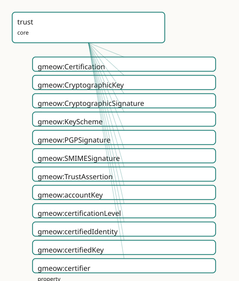

GMEOW Trust Module
- IRI: https://blackcatinformatics.ca/gmeow/slices/trust
- Tier: core
Group: core
What This Slice Covers
This slice owns 34 terms and contributes 12 mapping or projection rows. Use it when its terms match the native fact you want to preserve; use the linkage tables to see how those facts leave GMEOW for consumer vocabularies.
Dependencies
Consumers
- Keys, certifications, and cryptographic signatures used by email wire-auth and attestation.
Local Map

Examples
Web Of Trust
- Source:
slices/core/trust/examples/web-of-trust.ttl - GMEOW terms:
gmeow:Certification,gmeow:CryptographicKey,gmeow:Person,gmeow:TrustAssertion,gmeow:certificationLevel,gmeow:certifiedIdentity,gmeow:certifiedKey,gmeow:certifier,gmeow:endorses,gmeow:fingerprint
# SPDX-FileCopyrightText: 2026 Blackcat Informatics® Inc. <paudley@blackcatinformatics.ca>
# SPDX-License-Identifier: CC-BY-4.0
#
# Worked example: the PGP web of trust . Trust is decentralized and
# relational: agents gmeow:holdsKey cryptographic keys; one agent's
# gmeow:Certification signs another's key (a key-signing, binding key↔identity);
# and a gmeow:TrustAssertion records how much a trustor trusts a trustee AS AN
# INTRODUCER (gmeow:trustLevel + gmeow:introducerDepth — how far transitive trust
# may flow). gmeow:endorses is the lightweight, keyless vouch. No central
# authority: trust is asserted pairwise and composed.
@prefix gmeow: <https://blackcatinformatics.ca/gmeow/> .
@prefix ex: <https://blackcatinformatics.ca/gmeow/examples/trust/> .
ex:alice a gmeow:Person ;
gmeow:name "Alice"@en ;
gmeow:holdsKey ex:aliceKey ;
gmeow:endorses ex:bob .
ex:bob a gmeow:Person ;
gmeow:name "Bob"@en ;
gmeow:holdsKey ex:bobKey .
ex:aliceKey a gmeow:CryptographicKey ;
gmeow:keyScheme gmeow:keySchemePGP ;
gmeow:keyAlgorithm "ed25519" ;
gmeow:fingerprint "ABCD 1234 EF56 7890 ABCD 1234 EF56 7890 ABCD 1234" ;
gmeow:keyId "0xEF567890" .
ex:bobKey a gmeow:CryptographicKey ;
gmeow:keyScheme gmeow:keySchemePGP ;
gmeow:fingerprint "EF01 5678 ABCD 1234 EF01 5678 ABCD 1234 EF01 5678" .
# --- Alice signs Bob's key, certifying the key↔identity binding.
ex:cert a gmeow:Certification ;
gmeow:certifier ex:alice ;
gmeow:certifiedKey ex:bobKey ;
gmeow:certifiedIdentity ex:bob ;
gmeow:certificationLevel "positive" .
# --- Alice trusts Bob as a level-1 introducer (his certifications count for her).
ex:trust a gmeow:TrustAssertion ;
gmeow:trustor ex:alice ;
gmeow:trustee ex:bob ;
gmeow:trustLevel "full" ;
gmeow:introducerDepth 1 .
Terms
Classes
| Term | Label | Definition |
|---|---|---|
gmeow:Certification |
Certification | A reified attestation that a cryptographic key belongs to a given identity, made by a certifying agent (a PGP key-signature / Web-of-Trust certification). Its... |
gmeow:CryptographicKey |
Cryptographic Key | A public key, certificate, or key material bound to an agent's identity — the thing a signature is made with and a certification vouches for. |
gmeow:CryptographicSignature |
Cryptographic Signature | A cryptographic signature over a message or its headers, asserting origin and integrity. |
gmeow:KeyScheme |
Key Scheme | The cryptographic scheme/format of a key (OpenPGP, X.509, SSH, Nostr, …). Modelled as a value, not a key subclass: the set of schemes is open-ended and they ca... |
gmeow:PGPSignature |
PGP Signature | An OpenPGP signature (RFC 4880/9580, PGP-MIME RFC 3156) over a message, bound to a PGP key. |
gmeow:SMIMESignature |
S/MIME Signature | An S/MIME signature (RFC 8551) over a message, bound to an X.509 certificate. |
gmeow:TrustAssertion |
Trust Assertion | A reified, perspectival assertion that one agent (the trustor) trusts another (the trustee), optionally as an introducer to a given depth — the OpenPGP owner-t... |
Properties
| Term | Label | Definition |
|---|---|---|
gmeow:accountKey |
account key | Relates an online account to the cryptographic key that identifies it — the seam joining a decentralized-identity account (e.g. a Nostr account's nostrPubkey l... |
gmeow:certificationLevel |
certification level | How carefully the binding was verified (OpenPGP certification level): generic, persona, casual, or positive. |
gmeow:certifiedIdentity |
certified identity | The agent identity a certification binds the key to. |
gmeow:certifiedKey |
certified key | The cryptographic key a certification vouches for. |
gmeow:certifier |
certifier | The agent that made a certification. |
gmeow:endorses |
endorses | A convenience shortcut recording that one agent vouches for another. Deliberately NOT symmetric (endorsement is directional) and NOT transitive (trust must not... |
gmeow:fingerprint |
fingerprint | A fingerprint (hash) identifying a key. Not functional: different sources may report differing or differently-formatted fingerprints for the same key. |
gmeow:holdsKey |
holds key | Relates an agent to a cryptographic key it holds. The period over which the agent held the key may be carried with gmeow:validFrom/validUntil on this statement. |
gmeow:introducerAmount |
introducer amount | The trust-signature amount/weight the trustor assigns to the trustee as an introducer. |
gmeow:introducerDepth |
introducer depth | The trust-signature depth: how many levels of indirect introducers the trustor is willing to follow (a trust-signature notion, not computed here). |
gmeow:keyAlgorithm |
key algorithm | The key's algorithm (e.g. rsa, ed25519, secp256k1). Not functional (source-variable). |
gmeow:keyExpiresAt |
key expires at | The instant a key is set to expire. Not functional (sources may report different expiry, and subkeys differ). |
gmeow:keyId |
key id | A short identifier for a key (e.g. a PGP long key id). Not functional (source-variable). |
gmeow:keyMaterial |
key material | The public key material itself (armored or hex form). Not functional (encodings vary by source). |
gmeow:keyScheme |
key scheme | The scheme/format of a cryptographic key (one of the gmeow:KeyScheme individuals). Functional: a key has exactly one scheme — a key of a different scheme is a... |
gmeow:signatureAlgorithm |
signature algorithm | The algorithm used for a signature (e.g. rsa-sha256, ed25519). |
gmeow:signedBy |
signed by | The agent (or signing identity) that produced a signature. |
gmeow:signingDomain |
signing domain | The domain asserted by a signature (e.g. the DKIM d= tag). |
gmeow:signingKey |
signing key | The cryptographic key that produced a signature (the trust module's CryptographicKey). Complements gmeow:signedBy: signedBy gives the identity, signingKey give... |
gmeow:trustLevel |
trust level | The degree of owner-trust expressed: ultimate, full, marginal, or none. |
gmeow:trustee |
trustee | The agent that is trusted by the trustor in a trust-assertion. |
gmeow:trustor |
trustor | The agent whose (subjective) trust a trust-assertion expresses — the perspective holder. |
gmeow:verificationStatus |
verification status | The verification outcome of a signature: verified, failed, or unverified. |
Individuals
| Term | Label | Definition |
|---|---|---|
gmeow:keySchemeNostr |
Nostr | The nostr key scheme — a cryptographic key format used to identify an agent or sign messages. |
gmeow:keySchemePGP |
OpenPGP | The pgp key scheme — a cryptographic key format used to identify an agent or sign messages. |
gmeow:keySchemeSSH |
SSH | The ssh key scheme — a cryptographic key format used to identify an agent or sign messages. |
gmeow:keySchemeX509 |
X.509 | The x.509 key scheme — a cryptographic key format used to identify an agent or sign messages. |
Linkages
- Rows: 12
- Projection profiles:
intoto - External vocabularies:
https,wd,wot
| Source | Kind | Profile | Predicate/Relation | Target | Evidence |
|---|---|---|---|---|---|
gmeow:Certification |
equivalence | - |
skos:closeMatch | wd:Q747527 | gmeow-wikidata.sssom.tsv; gmeow:eqWikidata048; confidence 0.8 |
gmeow:Certification |
equivalence | - |
skos:closeMatch | wot:Endorsement | gmeow-trust.sssom.tsv; gmeow:eqTrust005; confidence 0.8 |
gmeow:CryptographicKey |
equivalence | - |
skos:closeMatch | wd:Q826762 | gmeow-wikidata.sssom.tsv; gmeow:eqWikidata047; confidence 0.85 |
gmeow:CryptographicKey |
equivalence | - |
skos:closeMatch | wot:PubKey | gmeow-trust.sssom.tsv; gmeow:eqTrust001; confidence 0.9 |
gmeow:certificationLevel |
equivalence | - |
skos:closeMatch | wot:assurance | gmeow-trust.sssom.tsv; gmeow:eqTrust007; confidence 0.7 |
gmeow:certifier |
equivalence | - |
skos:closeMatch | wot:signer | gmeow-trust.sssom.tsv; gmeow:eqTrust006; confidence 0.8 |
gmeow:fingerprint |
equivalence | - |
skos:closeMatch | wot:fingerprint | gmeow-trust.sssom.tsv; gmeow:eqTrust002; confidence 0.95 |
gmeow:holdsKey |
equivalence | - |
skos:closeMatch | wot:hasKey | gmeow-trust.sssom.tsv; gmeow:eqTrust004; confidence 0.9 |
gmeow:keyId |
equivalence | - |
skos:closeMatch | wot:hex_id | gmeow-trust.sssom.tsv; gmeow:eqTrust003; confidence 0.9 |
gmeow:CryptographicSignature |
projection | intoto |
projects to / <= | https://in-toto.io/Statement/v1#signature | gmeow:mapInTotoSignature; confidence 0.6; lossy: signature bytes, algorithm, signed-by identity |
gmeow:keyId |
projection | intoto |
projects to / <= | https://in-toto.io/Statement/v1#signature | gmeow:mapInTotoSignature; confidence 0.6; lossy: signature bytes, algorithm, signed-by identity |
gmeow:signingKey |
projection | intoto |
projects to / <= | https://in-toto.io/Statement/v1#signature | gmeow:mapInTotoSignature; confidence 0.6; lossy: signature bytes, algorithm, signed-by identity |
Guide
Trust — keys, certifications, and perspectival owner-trust
Slice:
https://blackcatinformatics.ca/gmeow/slices/trust· tier: core The Web-of-Trust superset layer: who holds which key, who vouches for the binding, and who trusts whom — never computed, only recorded.
This is the cross-cutting trust facility — cryptographic keys, certifications
(key↔identity attestations), and owner-trust — the superset of OpenPGP (RFC 4880/9580),
X.509, SSH, and Nostr, aligned to the WOT schema by reference (Principle 5). Its governing
refusal: trust here is asserted and perspectival; trust metrics (transitive validity
propagation) stay outside the logical core (Principle 12). There is no global trusts
property, endorses is neither symmetric nor transitive, and no property chain ever makes
A trust C because A trusts B and B trusts C — bounding exactly that is what trust-signature
depth is for.
The slice exercises the standpoint doctrine that governs every contested-fact
slice: accordingTo (whose frame holds it) ⟂ wasAttributedTo (which source recorded it)
⟂ confidence (how sure we are) — three axes that never bridge (Principle 9). A
TrustAssertion is already perspectival (its trustor is the frame holder), but the
underlying Certification can also be disputed across standpoints — one holds the
binding unequivocal, another refutes it — through the cross-cutting facility
alone: no trust-specific dispute mechanism, no primaryCertification, no
preferredTrust. For the claim spine (Principle 14), this slice is the attestation floor:
the keys and signatures that make a GTS memory package signed, append-only, and
model-attested are first-class individuals here.
Keys
gmeow:CryptographicKey
A public key, certificate, or key material bound to an agent's identity — the thing a
signature is made with and a certification vouches for. An InformationObject. Carries
source-variable descriptors (fingerprint, keyId, keyAlgorithm, keyMaterial,
keyExpiresAt) — none functional, because different sources legitimately report
differing formats and values, and those reports coexist (Principle 9).
gmeow:KeyScheme
The scheme/format of a key — keySchemePGP, keySchemeX509, keySchemeSSH,
keySchemeNostr — a value vocabulary, never key subclasses: schemes are open-ended and
carry no distinct structure here, so a new scheme is a new individual (the standard
open-vocabulary move). gmeow:keyScheme is functional: a key of a different scheme is a
different key.
gmeow:holdsKey · gmeow:accountKey
The two possession seams: an Agent holds a key (tenure carried flat with
validFrom/validUntil on the statement — the flat-first pattern); an OnlineAccount is
identified by a key (accountKey joins a decentralized-identity account, e.g. a Nostr
pubkey literal, to the key as a first-class entity).
Certification — the WoT edge
gmeow:Certification
A reified gufo:Relator: agent X attests that key K belongs to identity Y — the PGP
key-signature. EL-axiomatised to mediate a certifier, a certifiedKey, and a
certifiedIdentity (all functional; closed-world cardinality is SHACL's, Principle 7).
Certifications expire and are revoked, so the validity window rides on
validFrom/validUntil — revocation sets validUntil, it never deletes
(Principle 10).
gmeow:certificationLevel
How carefully the binding was verified — the OpenPGP ladder: generic, persona, casual, positive. Recorded verbatim as input to downstream validity computation, never interpreted by the reasoner.
Owner-trust — perspectival by construction
gmeow:TrustAssertion
The OpenPGP owner-trust notion, reified with an explicit trustor so one agent's
subjective trust never becomes a global fact: trustor, trustee, trustLevel
(ultimate / full / marginal / none), and a validFrom/validUntil window. The relator
is the standpoint — there is nothing to dispute about "S trusts T marginally" except
whether S really asserted it.
gmeow:introducerDepth · gmeow:introducerAmount
The trust-signature parameters: how many levels of indirect introducers the trustor will follow, and with what weight. These are inputs to a Web-of-Trust validity computation that happens in the projection layer — represent inputs and outputs, never compute the metric in OWL (Principle 12).
gmeow:endorses
The flat convenience shortcut for "vouches for" — deliberately directional (not
symmetric) and not transitive. Promote to a TrustAssertion when the trust needs a
level, a window, or its own identity: the flat↔reified pairing in its standard form.
Signatures
gmeow:CryptographicSignature
A signature over any artifact — not only mail — asserting origin and integrity, with
subkinds PGPSignature (RFC 4880/9580, PGP-MIME) and SMIMESignature (RFC 8551).
Re-homed beside the keys it references in the dependency surgery; the
email-wire half (DKIM, Authentication-Results, relay hops) lives in the email extension.
gmeow:signedBy · gmeow:signingKey
The identity and the key — exactly the pair a Certification attests. signedBy gives
the agent, signingKey (functional) gives the CryptographicKey; signatureAlgorithm
and signingDomain (the DKIM d= tag) describe the mechanism.
gmeow:verificationStatus
The recorded verification outcome — verified, failed, or unverified. A report of a computation done outside the graph (Principle 12), never an entailment: the reasoner neither verifies signatures nor propagates their validity.
Dependencies
Depends on accounts (the OnlineAccount seam) and kernel. Consumed wherever identity
must be vouched for: contacts, accounts, email wire-authentication, and the GTS packages'
COSE attestation chain (Principle 14).